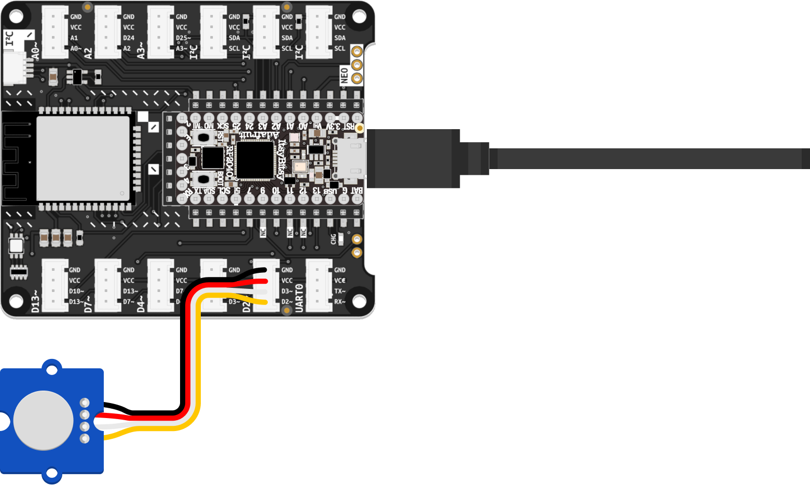

The code in this tutorial is similar to the program you saw before. This time, you will write it yourself to better understand what you are doing.

code.py file on your CIRCUITPY drive, so you need to delete or rename the existing one. For instance, you can use your computer’s file manager to give the old file from the last tutorial the name blink_code.py. Remember that your microcontroller will only execute code stored in a file named code.py.D2 on the Expander Board, as shown in the illustration above.New button in the toolbar at the top to create a new file. Then click Save to store your new file on the CIRCUITPY drive, naming it code.py.import statements. These inform your board about additional instruction sets your code needs to work. These instruction sets are called libraries or modules. You need to import three modules: board tells your program about the pins available on your microcontroller and their names. digitalio contains functions necessary for working with digital inputs and outputs. time allows your code to use timing-related functionality.sensor will store a digitalio object attached to pin D2. In the following line of code, you define the value stored in sensor to be read from an INPUT, not written to an output.while loop whose condition is set to True. Inside this endlessly repeating loop, you use a print statement to display the sensor.value in the Serial Monitor each time the code repeats. Using a sleep timer, you slow down the speed of the loop so as not to overwhelm Mu’s Serial Monitor with more messages than it can handle.import board
import digitalio
import time
sensor = digitalio.DigitalInOut(board.D2)
sensor.direction = digitalio.Direction.INPUT
while True:
print(sensor.value)
time.sleep(0.1)
Libraries and modules contain code written by other people to fulfill specific tasks. Core modules, such as board, digitalio, and time provide functionality essential to working with your board. Therefore, they are already included in CircuitPython. In some cases, you may need to download additional libraries to add functionality, such as drivers for specific sensors, to your code. You can learn more about that subject by reading the chapter on CircuitPython Libraries in Adafruit’s guide.